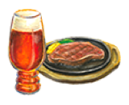
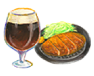
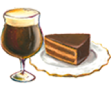
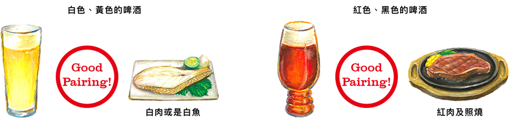
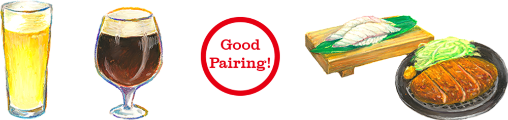
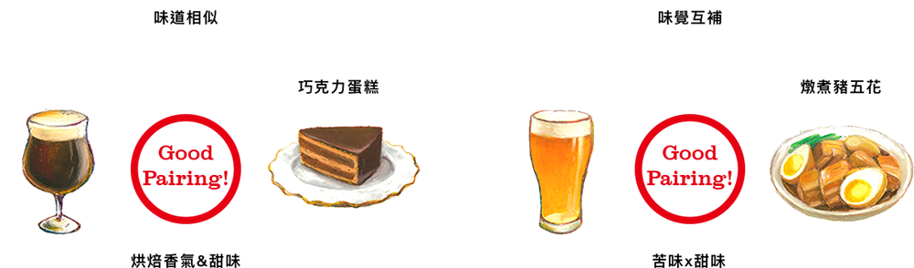

酒食配
精釀啤酒與料理的酒食配提案
白酒配魚肉、紅酒配牛肉，那麼和精釀啤酒絕配的料理是…？ 日本常見的皮爾森啤酒可與任何餐點搭配，因此較少人討論啤酒與料理的酒食配。Tap Marché所推出的精釀啤酒可和各式各樣的料理搭配。「料理與啤酒都更加美味了！」「和不同的料理搭配飲用，啤酒的味道和印象中改變了！」酒食配對成功，您將發覺從未感受的餐飲新體驗。 如果店家可以推薦適合料理的精釀啤酒，推估顧客滿意度會提高。只需要掌握要領，酒食配不是件難事。請務必嘗試。
點選影片了解更多酒食配
酒食配的訣竅 (2:14)
酒食配三步驟
找出【料理】與 【精釀啤酒】的絕配 Tap Marché提案酒食配三步驟： 酒食搭配建議 並非絕對，請自由的發想與嘗試不同搭配，找出【料理】與【精釀啤酒】的最佳搭配。
Step1
顏色搭配
Step2
味覺搭配
Step3
特色搭配
Step1 顏色搭配
第一個建議是 顏色 搭配。 將啤酒與料理的顏色做匹配的方式。白色與黃色的啤酒搭配白肉和白魚，紅色與黑色的啤酒搭配紅肉和照燒。
Step2 味覺搭配
啤酒根據類型與商品有味覺強弱。 料理的味覺強度在Tap Marché的「素材」和「調味」有加乘效果。建議將「啤酒的味覺強度」和「料理的味覺強度」做搭配。
酒食配互動圖
「店家的料理味覺強度算高還低呢?」 「這款啤酒和怎麼樣風味的料理適合呢?」 在腦中思考的話也許感到困難，而Tap Marché將「啤酒」與「料理」的味覺強度，以圖像化來進行簡易的配對。 ＞ 看酒食配互動圖
Step3 特色搭配
最後一步是將啤酒和料理的特色做搭配。 精釀啤酒除了皮爾森啤酒、愛爾啤酒、黑啤酒的酒種之外，依據日本與海外產地的不同、特殊製法不同口味與香氣，還有很多獨特的產品，今後也會持續的增多。 日本、西式、中華、台灣的料理分類無法滿足多樣化的美味料理。而在啤酒與料理特色的搭配中，找到自有店家獨特的組合，是酒食配絕妙的樂趣所在。 店家可以自由地搭配酒食組合，例如：同樣有柑橘香氣的料理與啤酒、同樣有酸味的料理與啤酒、味道相似的料理與啤酒、甚至是甜食與苦味啤酒在味道上的互補。 請務必在店家MENU加上酒食配的絕佳組合。
